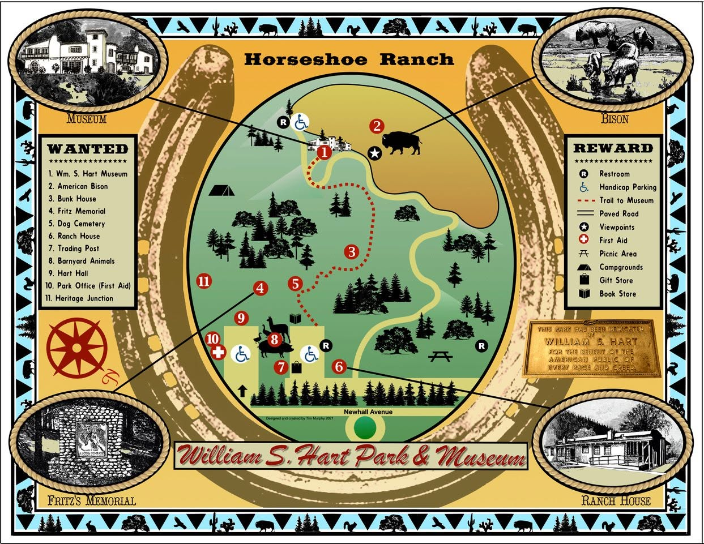

Explore William S. Hart Park
Spanning hundreds of acres of beautiful wilderness, scenic trails, and historical treasures, William S. Hart Park stands as a premier community refuge and preservation heritage site in Santa Clarita.

"Horseshoe Ranch" Property Map — designed and created by former volunteer Tim Murphy.